Two Wheeled Inverse Pendulum - Self Balancing Robot
Contents
- Robot NXT
- Model
- Parameter in Matlab
- Uncertainty of friction
- DC Motor Parameters
- State-Space Matrix Certain Model
- Uncertain SS
- Check Observability and Controllability
- Singular Value Plot
- Note DESAIN KONTROL
- Test Weight
- Performance Weighting Func
- Noise shaping filters
- Control action weights
- open-loop connection with the weighting functions
- Generates the open-loop connection for the Two-Wheeled Robot Control Plant 1
- Frequency responses of the Two-Wheeled Robot Control System (Part 1)
- * 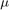-Synthesis and -Analysis*
- Opsi 1 -Synthesis dengan musyn
- Opsi 2 -Synthesis dengan dksyn
- H- Infinity [ TEST | Not Finished ]
- Frequency responses of the Two-Wheeled Robot Control System (Part 2)
- Mu analysis of the Two-Wheeled Robot Control System
- robust stability analysis
- nominal performance
- robust performance Plant 1
- Compare Controller H-inf and -syns
- ????
- REFERENCE
Robot NXT

Model


Parameter in Matlab

g = 9.81; % gravitasi [m/sec^2] m = 0.03; % wheel weight [kg] R = 0.04; % wheel radius [m] Jw = m * R^2 / 2; % wheel inertia moment [kgm^2] M = 0.6; % body weight [kg] W = 0.14; % body width [m] D = 0.04; % body depth [m] H = 0.144; % body height [m] L = H / 2; % jarak center of mass from the wheel axle [m] Jpsi = M * L^2 / 3; % body pitch inertia moment [kgm^2] Jphi = M * (W^2 + D^2) / 12; % body yaw inertia moment [kgm^2]
Uncertainty of friction
fm = ureal('fm',0.0022,'Percentage',20); fw = ureal('fw',0.0001,'Percentage',100); % fm = 0.0022; % friction coefficient between body & DC motor % fw = 0; % friction coefficient between wheel & floor
DC Motor Parameters
Jm = 1e-5; % DC motor inertia moment [kgm^2] Rm = 6.69; % DC motor resistance [Ħ] Kb = 0.468; % DC motor back EMF constant [Vsec/rad] Kt = 0.317; % DC motor torque constant [Nm/A] n = 1; % gear ratio
State-Space Matrix Certain Model
alpha = n * Kt / Rm; beta = n * Kt * Kb / Rm + fm; tmp = beta + fw; E_11 = (2 * m + M) * R^2 + 2 * Jw + 2 * n^2 * Jm; E_12 = M * L * R - 2 * n^2 * Jm; E_22 = M * L^2 + Jpsi + 2 * n^2 * Jm; detE = E_11 * E_22 - E_12^2; A1_32 = -g * M * L * E_12 / detE; A1_42 = g * M * L * E_11 / detE; A1_33 = -2 * (tmp * E_22 + beta * E_12) / detE; A1_43 = 2 * (tmp * E_12 + beta * E_11) / detE; A1_34 = 2 * beta * (E_22 + E_12) / detE; A1_44 = -2 * beta * (E_11 + E_12) / detE; B1_3 = alpha * (E_22 + E_12) / detE; B1_4 = -alpha * (E_11 + E_12) / detE; A1 = [ 0 0 1 0 0 0 0 1 0 A1_32 A1_33 A1_34 0 A1_42 A1_43 A1_44 ]; B1 = [ 0 0 0 0 B1_3 B1_3 B1_4 B1_4 ]; C1 = eye(4); D1 = zeros(4, 2); I = m * W^2 / 2 + Jphi + (Jw + n^2 * Jm) * W^2 / (2 * R^2); J = tmp * W^2 / (2 * R^2); K = alpha * W / (2 * R); A2 = [ 0 1 0 -J / I ]; B2 = [ 0 0 -K / I K / I ]; C2 = eye(2); D2 = zeros(2); % delete un-used variable clear alpha beta tmp clear E_11 E_12 E_22 detE clear A1_32 A1_33 A1_34 A1_42 A1_43 A1_44 B1_3 B1_4 I J K
Uncertain SS
G_unc1 = ss(A1,B1,C1,D1); G_unc2 = ss(A2,B2,C2,D2); % get(G_unc1) % get(G_unc2)
Check Observability and Controllability
Ob1=obsv(A1,C1); Ct1=ctrb(A1,B1); Ob2=obsv(A2,C2); Ct2=ctrb(A2,B2); % rank(Ct); % rank(Ob)
Singular Value Plot
figure(1) % step(G_unc1.Nominal,'r-',G_unc1,'b--'), grid % bode(G_unc1.Nominal,'r-',G_unc1,'b--'), grid sigma(G_unc1.Nominal,'r-',G_unc1,'b--'), grid axis([10^(-1) 3*10^2 -5 25]) xlabel('Frequency') ylabel('Singular values') title('Singular value plot of the uncertain model') legend('Nominal system','Random samples')

Note DESAIN KONTROL
<9.PNG> Membuat desain kontrol untuk plant 1 sangat mudah karena diagram blok sudah tersedia pada [1].
{kind=link}
Test Weight
w=logspace(-1,1,100); figure(1) bodemag(G_unc1,w) grid figure(2) step(G_unc1) grid figure(3) bodemag(G_unc2,w) grid figure(4) step(G_unc2) grid % step(G_unc1) % grid


Performance Weighting Func
Teori Performance Weighting


%%%% tol = 0.6*10.0^(-1); % nuWp = [0.4 1]; % dnWp = [5.0 tol]; gainWp = 0.95*10^(0); % %%%% Wp11 = gainWp*tf(nuWp,dnWp); Wp22 = 0.93; % Wp33 = 0.15; % %%%% nuWp = [1.1 1]; dnWp = [1.0 1]; gainWp = 0.22*10^(0); % %%%%% Wp44 = gainWp*tf(nuWp,dnWp); %--------------------- % 5 tol = 0.6*10.0^(-1); % nuWp = [0.4 1]; % dnWp = [5.0 tol]; % gainWp = 1.8*10^(0); % Wp55 = gainWp*tf(nuWp,dnWp); %---------------------------- Wp = [Wp11 0 0 0 0; 0 Wp22 0 0 0; 0 0 Wp33 0 0; 0 0 0 Wp44 0; 0 0 0 0 Wp55]; % Wp untun plant 1 Wp2 = [Wp11 0 0; 0 Wp44 0; 0 0 Wp55]; % Wp untun plant 2 figure(2) bodemag(1/Wp11,'r-',1/Wp44,'b--',1/Wp55,'c-.',{10^(-3) 10^2}) grid title('Inverse performance weighting functions') legend('W_{p11}^{-1}','W_{p44}^{-1}','W_{p55}^{-1}') %
Noise shaping filters


Wn11 = 0.1*tf([1 2], [0.001 1]); % Wn22 = 1.0*tf([1 2], [0.001 1]); % %------------------------------------- Wn = [Wn11 0 0 Wn22]; % Sensor Noise figure(3) bodemag(Wn11,'r-',Wn22,'b--',{10^(-1) 10^4}) grid title('Sensor noise weight') legend('Wn11','Wn22') %
Control action weights


nuWu = [1.2 1]; % dnWu = [0.0024 1]; % gainWu = 2.0*10^(-2); % Wu11 = gainWu*tf(nuWu,dnWu); %------------------------------------- Wu = [Wu11 0 0 Wu11]; figure(4) bodemag(1/Wu11,'r-',{10^(-1) 10^4}) grid title('Inverse control weighting functions') % %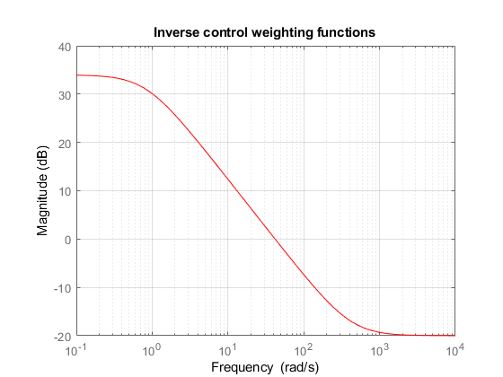
open-loop connection with the weighting functions
2 dof controller Plant 1


s = tf('s'); Intg = 1/(s+10^(-6)); systemnames = ' G_unc1 Wn Wp Wu Intg '; inputvar = '[ ref{4}; noise{2}; control{2} ]'; outputvar = '[ Wp; Wu; ref; -G_unc1(1:2); -G_unc1(3:4)-Wn; Intg ]'; input_to_G_unc1 = '[ control ]'; input_to_Wn = '[ noise ]'; input_to_Wp = '[ ref(1:4)-G_unc1(1:4); Intg ]'; input_to_Wu = '[ control ]'; input_to_Intg = '[ ref(1)-G_unc1(1) ]'; sys_ic = sysic; % C_hh = [1 0]; systemnames = 'G_unc2 Wn Wp2 Wu Intg'; inputvar = '[ ref{4}; noise{2}; control{2} ]'; outputvar = '[Wp2; Wu; ref; -G_unc2; -G_unc2(2)-Wn(1); Intg ]'; input_to_G_unc2 = '[ control ]'; input_to_Wp2 = '[ref(1:2)-G_unc2(1:2); Intg]'; input_to_Wn = '[ noise ]'; input_to_Wu = '[ control ]'; input_to_Intg = '[ ref(1)-G_unc2(1) ]'; sys_ic2 = sysic; % X_hh = [1 0];
Generates the open-loop connection for the Two-Wheeled Robot Control Plant 1
System simulation
s = tf('s'); Intg1 = 1/(s+10^(-5)); % systemnames = ' G_unc1 Intg1 Wn '; inputvar = '[ ref{4}; noise{2}; control{2} ]'; outputvar = '[ G_unc1; control; ref; -G_unc1(1:2); -G_unc1(3:4)-Wn; Intg1 ]'; input_to_G_unc = '[ control ]'; input_to_Wn = '[ noise ]'; input_to_Intg1 = '[ ref(1)-G_unc1(1) ]'; sim_ic = sysic;
Frequency responses of the Two-Wheeled Robot Control System (Part 1)
declare closed-loop interconnection
s = tf('s'); Intg2 = 1/(s+10^(-5)); %Intg2 = 1/s; % systemnames = ' sim_ic Intg2 '; inputvar = '[ ref{4}; noise{2}; control{2} ]'; outputvar = '[ sim_ic(1:6); ref(1:4)-sim_ic(1:4); Intg2; sim_ic(7:15) ]'; input_to_sim_ic = '[ ref; noise; control ]'; input_to_Intg2 = '[ ref(1)- sim_ic(1) ]'; clp_ic = sysic;
* -Synthesis and -Analysis*

Untuk merancang -synthesis. The matrix P is the transfer function matrix of the extended open-loop system shown in Fig 19.5 closed-loop connection for the discrete-time system
Ts = 4.0*10^(-3); omega = logspace(-3,log10(pi/Ts),200); [Mat,Delta,blkstruct] = lftdata(sys_ic); %plant 1 M_d = c2d(Mat,Ts); dsys_ic = lft(Delta,M_d); [Mat2,Delta2,blkstruct2] = lftdata(sys_ic2); %plant 2 M_d2 = c2d(Mat2,Ts); dsys_ic2 = lft(Delta2,M_d2); % *Tune Mu-Synthesis* nmeas = 9; ncont = 2; nmeas2 = 4; ncont2 = 2; fv = linspace(0,pi/Ts,200);
Opsi 1 -Synthesis dengan musyn
%Plant 1 opts = musynOptions('MixedMU','on','FullDG',false,... 'Display','short', ... 'MaxIter',5) [K,CLperf,info] = musyn(dsys_ic,nmeas,ncont,opts); Ts = 4.0*10^(-3); omega = logspace(-3,log10(pi/Ts),200); CL = lft(dsys_ic,K); wcg = wcgain(CL) figure(1) clf sigma(CL,'r-',omega), grid axis([10^(-3) 10^1 -10 10]) title('Full cost') % %Plant 2 % Gambar ? opts2 = musynOptions('MixedMU','on','FullDG',false,... 'Display','short', ... 'MaxIter',8) [K2,CLperf2,info2] = musyn(dsys_ic2,nmeas2,ncont2,opts2); Ts = 4.0*10^(-3); omega = logspace(-3,log10(pi/Ts),200); CL2 = lft(dsys_ic2,K2); wcg2 = wcgain(CL2) figure(2) clf sigma(CL2,'r-',omega), grid axis([10^(-3) 10^1 -10 10]) title('Full cost')
opts =
musyn with properties:
Display: 'short'
MaxIter: 5
TargetPerf: 0
TolPerf: 0.0100
MixedMU: 'on'
FullDG: [0 0]
FitOrder: [5 2]
FrequencyGrid: [0×1 double]
AutoScale: 'on'
Regularize: 'on'
LimitGain: 'on'
RandomStart: 0
UseParallel: 0
MinDecay: 1.0000e-07
MaxFrequency: Inf
DG-K ITERATION SUMMARY:
-------------------------------------------------------------------
Robust performance Fit order
-------------------------------------------------------------------
Iter K Step Peak MU DG Fit D G
1 1.56 1.56 1.561 0 4
2 0.9305 0.9303 0.9453 16 0
3 0.9307 0.9304 0.9453 18 0
4 0.9309 0.9304 0.9438 16 0
Best achieved robust performance: 0.93
wcg =
struct with fields:
LowerBound: 0.9303
UpperBound: 0.9322
CriticalFrequency: 2.2875
opts2 =
musyn with properties:
Display: 'short'
MaxIter: 8
TargetPerf: 0
TolPerf: 0.0100
MixedMU: 'on'
FullDG: [0 0]
FitOrder: [5 2]
FrequencyGrid: [0×1 double]
AutoScale: 'on'
Regularize: 'on'
LimitGain: 'on'
RandomStart: 0
UseParallel: 0
MinDecay: 1.0000e-07
MaxFrequency: Inf
DG-K ITERATION SUMMARY:
-------------------------------------------------------------------
Robust performance Fit order
-------------------------------------------------------------------
Iter K Step Peak MU DG Fit D G
1 18.82 18.82 18.82 0 0
2 1.579 1.579 1.579 0 0
3 1.142 1.142 1.152 4 4
4 1.136 1.135 1.136 4 0
5 1.134 1.134 1.134 4 0
Best achieved robust performance: 1.13
wcg2 =
struct with fields:
LowerBound: 1.1344
UpperBound: 1.1368
CriticalFrequency: 0
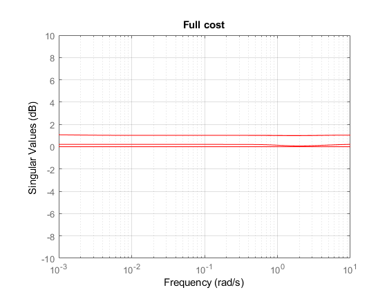 Opsi 2 -Synthesis dengan dksyn
%plant 1 figure(1) opt = dkitopt('FrequencyVector',fv, ... 'DisplayWhileAutoIter','on', ... 'NumberOfAutoIterations',5) [Kd,dclp] = dksyn(dsys_ic,nmeas,ncont,opt); Ts = 4.0*10^(-3); omega = logspace(-3,log10(pi/Ts),200); clf sigma(dclp,'r-',omega), grid axis([10^(-3) 10^1 -10 10]) title('Full cost') [A_h,B_h,C_h,D_h] = ssdata(Kd); % plant 2 figure(2) opt2 = dkitopt('FrequencyVector',fv, ... 'DisplayWhileAutoIter','on', ... 'NumberOfAutoIterations',5) [Kd2,dclp2] = dksyn(dsys_ic2,nmeas2,ncont2,opt2); Ts = 4.0*10^(-3); omega = logspace(-3,log10(pi/Ts),200); clf sigma(dclp2,'r-',omega), grid axis([10^(-3) 10^1 -10 10]) title('Full cost') [A_h2,B_h2,C_h2,D_h2] = ssdata(Kd2);
opt =
dkitopt with properties:
Default: [1×1 struct]
FrequencyVector: [200×1 double]
InitialController: []
AutoIter: 'on'
DisplayWhileAutoIter: 'on'
StartingIterationNumber: 1
NumberOfAutoIterations: 5
MixedMU: 'off'
AutoScalingOrder: [5 2]
AutoIterSmartTerminate: 'on'
AutoIterSmartTerminateTol: 0.0050
Warning: DKSYN is obsolete. Please use MUSYN
instead.
Iteration Number: 1
--------------------
Test bounds: 0.93 <= gamma <= 2.8
gamma X>=0 Y>=0 rho(XY)<1 p/f
1.6e+00 0.0e+00 0.0e+00 1.490e-04 p
Best performance (actual): 1.6
Calculating MU of closed-loop system:
Points completed: 200/200
Points completed: 200/200
Iteration Summary
-----------------------------
Iteration # 1
Controller Order 12
Total D-Scale Order 0
Gamma Acheived 1.609
Peak mu-Value 1.608
Auto Fit in Progress
Block 1, MaxOrder=5, Order = 0
Block 2, MaxOrder=5, Order = 0
Block 3, MaxOrder=5, Order = 0
Iteration Number: 2
--------------------
Test bounds: 0.93 <= gamma <= 1.43
gamma X>=0 Y>=0 rho(XY)<1 p/f
1.15e+00 0.0e+00 0.0e+00 2.048e-04 p
1.04e+00 0.0e+00 4.2e-24 2.681e-04 p
9.82e-01 0.0e+00 0.0e+00 3.176e-04 p
9.55e-01 0.0e+00 0.0e+00 3.551e-04 p
9.43e-01 0.0e+00 0.0e+00 3.835e-04 p
9.36e-01 0.0e+00 0.0e+00 4.091e-04 p
Best performance (actual): 0.932
Calculating MU of closed-loop system:
Points completed: 200/200
Points completed: 200/200
Iteration Summary
---------------------------------------
Iteration # 1 2
Controller Order 12 12
Total D-Scale Order 0 0
Gamma Acheived 1.609 0.932
Peak mu-Value 1.608 0.930
Auto Fit in Progress
Block 1, MaxOrder=5, Order = 0
Block 2, MaxOrder=5, Order = 0
Block 3, MaxOrder=5, Order = 0
Iteration Number: 3
--------------------
Test bounds: 0.93 <= gamma <= 1.4
gamma X>=0 Y>=0 rho(XY)<1 p/f
1.14e+00 0.0e+00 0.0e+00 2.055e-04 p
1.03e+00 0.0e+00 0.0e+00 2.672e-04 p
9.79e-01 0.0e+00 0.0e+00 3.151e-04 p
9.54e-01 0.0e+00 0.0e+00 3.502e-04 p
9.42e-01 0.0e+00 0.0e+00 3.765e-04 p
9.36e-01 0.0e+00 0.0e+00 4.012e-04 p
Best performance (actual): 0.932
Calculating MU of closed-loop system:
Points completed: 200/200
Points completed: 200/200
Iteration Summary
-------------------------------------------------
Iteration # 1 2 3
Controller Order 12 12 12
Total D-Scale Order 0 0 0
Gamma Acheived 1.609 0.932 0.932
Peak mu-Value 1.608 0.930 0.930
Auto Fit in Progress
Block 1, MaxOrder=5, Order = 0
Block 2, MaxOrder=5, Order = 0
Block 3, MaxOrder=5, Order = 0
Iteration Number: 4
--------------------
Test bounds: 0.93 <= gamma <= 1.54
gamma X>=0 Y>=0 rho(XY)<1 p/f
1.20e+00 0.0e+00 0.0e+00 1.727e-04 p
1.05e+00 0.0e+00 0.0e+00 2.509e-04 p
9.90e-01 0.0e+00 0.0e+00 3.558e-04 p
9.60e-01 0.0e+00 0.0e+00 5.043e-04 p
9.45e-01 0.0e+00 0.0e+00 6.931e-04 p
9.37e-01 0.0e+00 0.0e+00 9.358e-04 p
Best performance (actual): 0.937
Calculating MU of closed-loop system:
Points completed: 200/200
Points completed: 200/200
Iteration Summary
-----------------------------------------------------------
Iteration # 1 2 3 4
Controller Order 12 12 12 12
Total D-Scale Order 0 0 0 0
Gamma Acheived 1.609 0.932 0.932 0.937
Peak mu-Value 1.608 0.930 0.930 0.936
Auto Fit in Progress
Block 1, MaxOrder=5, Order = 0
Block 2, MaxOrder=5, Order = 0
Block 3, MaxOrder=5, Order = 0
Iteration Number: 5
--------------------
Test bounds: 0.93 <= gamma <= 1.14
gamma X>=0 Y>=0 rho(XY)<1 p/f
1.03e+00 0.0e+00 0.0e+00 3.603e-04 p
9.79e-01 0.0e+00 0.0e+00 4.067e-04 p
9.54e-01 0.0e+00 0.0e+00 4.351e-04 p
9.42e-01 7.7e-17 0.0e+00 4.546e-04 p
9.36e-01 0.0e+00 0.0e+00 4.735e-04 p
Best performance (actual): 0.931
Calculating MU of closed-loop system:
Points completed: 200/200
Points completed: 200/200
Iteration Summary
---------------------------------------------------------------------
Iteration # 1 2 3 4 5
Controller Order 12 12 12 12 12
Total D-Scale Order 0 0 0 0 0
Gamma Acheived 1.609 0.932 0.932 0.937 0.931
Peak mu-Value 1.608 0.930 0.930 0.936 0.930
Next MU iteration number: 6
opt2 =
dkitopt with properties:
Default: [1×1 struct]
FrequencyVector: [200×1 double]
InitialController: []
AutoIter: 'on'
DisplayWhileAutoIter: 'on'
StartingIterationNumber: 1
NumberOfAutoIterations: 5
MixedMU: 'off'
AutoScalingOrder: [5 2]
AutoIterSmartTerminate: 'on'
AutoIterSmartTerminateTol: 0.0050
Warning: DKSYN is obsolete. Please use MUSYN
instead.
Iteration Number: 1
--------------------
Test bounds: 11 <= gamma <= 32
gamma X>=0 Y>=0 rho(XY)<1 p/f
1.8e+01 -1.6e+07 # -4.1e-15 3.566e-07 f
Best performance (actual): 32
Calculating MU of closed-loop system:
Points completed: 200/200
Points completed: 200/200
Iteration Summary
-----------------------------
Iteration # 1
Controller Order 10
Total D-Scale Order 0
Gamma Acheived 32.466
Peak mu-Value 27.822
Auto Fit in Progress
Block 1, MaxOrder=5, Order = 0
Block 2, MaxOrder=5, Order = 0
Block 3, MaxOrder=5, Order = 0
Iteration Number: 2
--------------------
Test bounds: 5.1 <= gamma <= 16
gamma X>=0 Y>=0 rho(XY)<1 p/f
9.0e+00 -2.8e+06 # -1.3e-15 1.516e-06 f
1.2e+01 0.0e+00 0.0e+00 1.987e-03 p
1.0e+01 6.0e-20 0.0e+00 4.791e-03 p
9.7e+00 0.0e+00 0.0e+00 1.151e-02 p
Best performance (actual): 9.6
Calculating MU of closed-loop system:
Points completed: 200/200
Points completed: 200/200
Iteration Summary
---------------------------------------
Iteration # 1 2
Controller Order 10 10
Total D-Scale Order 0 0
Gamma Acheived 32.466 9.649
Peak mu-Value 27.822 9.625
Auto Fit in Progress
Block 1, MaxOrder=5, Order = 0
Block 2, MaxOrder=5, Order = 0
Block 3, MaxOrder=5, Order = 0
Iteration Number: 3
--------------------
Test bounds: 1.5 <= gamma <= 3.6
gamma X>=0 Y>=0 rho(XY)<1 p/f
2.3e+00 0.0e+00 0.0e+00 3.516e-02 p
1.8e+00 -3.6e+03 # -4.8e-15 5.246e-05 f
2.1e+00 -1.2e+04 # -2.0e-17 3.829e-05 f
2.2e+00 -4.6e+04 # -4.6e-17 3.302e-05 f
Best performance (actual): 2.3
Calculating MU of closed-loop system:
Points completed: 200/200
Points completed: 200/200
Iteration Summary
-------------------------------------------------
Iteration # 1 2 3
Controller Order 10 10 10
Total D-Scale Order 0 0 0
Gamma Acheived 32.466 9.649 2.309
Peak mu-Value 27.822 9.625 2.307
Auto Fit in Progress
Block 1, MaxOrder=5, Order = 0
1
2
3
4
Block 2, MaxOrder=5, Order = 0
1
2
3
4
Block 3, MaxOrder=5, Order = 0
Iteration Number: 4
--------------------
Test bounds: 1.13 <= gamma <= 2
gamma X>=0 Y>=0 rho(XY)<1 p/f
1.51e+00 0.0e+00 0.0e+00 1.784e-02 p
1.31e+00 -1.5e+03 # -7.9e-17 2.007e-04 f
1.40e+00 -1.5e+04 # -1.0e-14 1.397e-04 f
1.45e+00 0.0e+00 0.0e+00 4.605e-02 p
1.43e+00 0.0e+00 0.0e+00 1.929e-01 p
1.41e+00 -5.8e+04 # -1.2e-14 1.342e-04 f
Best performance (actual): 1.43
Calculating MU of closed-loop system:
Points completed: 200/200
Points completed: 200/200
Iteration Summary
-----------------------------------------------------------
Iteration # 1 2 3 4
Controller Order 10 10 10 26
Total D-Scale Order 0 0 0 16
Gamma Acheived 32.466 9.649 2.309 1.427
Peak mu-Value 27.822 9.625 2.307 1.427
Auto Fit in Progress
Block 1, MaxOrder=5, Order = 0
1
Block 2, MaxOrder=5, Order = 0
1
Block 3, MaxOrder=5, Order = 0
Iteration Number: 5
--------------------
Test bounds: 1.05 <= gamma <= 1.45
gamma X>=0 Y>=0 rho(XY)<1 p/f
1.23e+00 0.0e+00 0.0e+00 1.620e-02 p
1.14e+00 -1.2e+03 # -4.8e-15 5.927e-04 f
1.19e+00 0.0e+00 0.0e+00 1.016e-01 p
1.16e+00 -3.8e+03 # -1.5e-16 4.700e-04 f
1.17e+00 -2.3e+04 # -3.4e-15 4.245e-04 f
Best performance (actual): 1.19
Calculating MU of closed-loop system:
Points completed: 200/200
Points completed: 200/200
Iteration Summary
---------------------------------------------------------------------
Iteration # 1 2 3 4 5
Controller Order 10 10 10 26 14
Total D-Scale Order 0 0 0 16 4
Gamma Acheived 32.466 9.649 2.309 1.427 1.185
Peak mu-Value 27.822 9.625 2.307 1.427 1.185
Next MU iteration number: 6
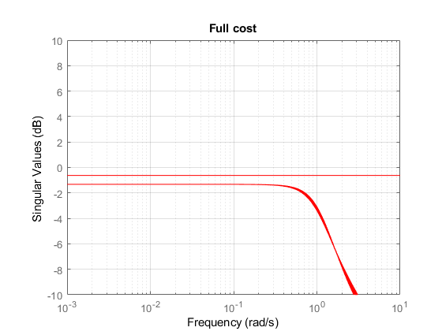 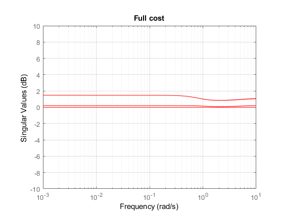 H- Infinity [ TEST | Not Finished ]
nmeas3 = 9; ncon3 = 2; gmin = 0; gmax = 10; % tol = 0.001; [hin_ic,Delta4] = lftdata(sys_ic); % hin_ic = sys_ic.Nom; [K_hin,dclp_hin,gopt] = hinfsyn(hin_ic,nmeas3,ncon3,[gmin,gmax]); gmin = 1.1*gopt; [K_hin,dclp_hin,gfin] = hinfsyn(hin_ic,nmeas3,ncon3,[gmin,gmin]); disp(' ') get(K_hin) disp(' ') disp('Closed-loop poles') sp = pole(dclp_hin) % omega = logspace(-2,6,100); omega = logspace(-3,log10(pi/Ts),500); sigma(clp_hin,omega) title('Singular Value Plot of clp') xlabel('Frequency (rad/sec)') ylabel('Magnitude') % Ts = 4.0*10^(-3); % M_d4 = c2d(hin_ic,Ts); % dclp_hin2 = lft(Delta4,M_d4); % clp_hin = lft(dclp_hin2,K_hin); % K = K_hin;
A: [12×12 double]
B: [12×9 double]
C: [2×12 double]
D: [2×9 double]
E: []
Scaled: 0
StateName: {12×1 cell}
StateUnit: {12×1 cell}
InternalDelay: [0×1 double]
InputDelay: [9×1 double]
OutputDelay: [2×1 double]
Ts: 0
TimeUnit: 'seconds'
InputName: {9×1 cell}
InputUnit: {9×1 cell}
InputGroup: [1×1 struct]
OutputName: {2×1 cell}
OutputUnit: {2×1 cell}
OutputGroup: [1×1 struct]
Notes: [0×1 string]
UserData: []
Name: ''
SamplingGrid: [1×1 struct]
Closed-loop poles
sp =
1.0e+03 *
-0.0000 + 0.0000i
-0.0010 + 0.0000i
-0.0000 + 0.0000i
-0.4167 + 0.0000i
-0.4167 + 0.0000i
-0.9429 + 0.0000i
-0.9147 + 0.0000i
-0.2277 + 0.0000i
-0.2416 + 0.0000i
-0.0964 + 0.0000i
-0.0320 + 0.0000i
-0.0100 + 0.0000i
-0.0064 + 0.0023i
-0.0064 - 0.0023i
-0.0070 + 0.0000i
-0.0061 + 0.0000i
-0.0042 + 0.0000i
-0.0000 + 0.0000i
-0.0004 + 0.0004i
-0.0004 - 0.0004i
-0.0010 + 0.0000i
-0.0008 + 0.0000i
-1.0000 + 0.0000i
-1.0000 + 0.0000i
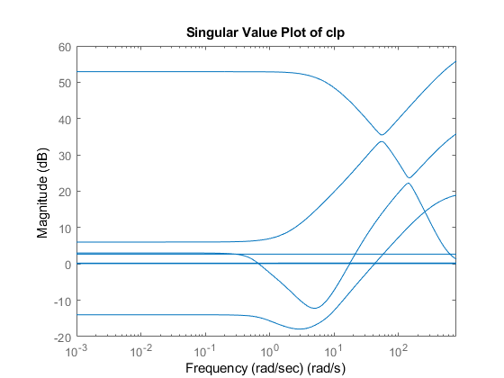 Frequency responses of the Two-Wheeled Robot Control System (Part 2)
Ts = 4.0*10^(-3); % buat LFT [M3,Delta3,blkstruct3] = lftdata(clp_ic); M_d3 = c2d(M3,Ts); % close loop dclp_ic3 = lft(Delta3,M_d3); clp = lft(dclp_ic3,Kd); % dWp = c2d(Wp,Ts); dWn = c2d(Wn,Ts); dWu = c2d(Wu,Ts); % % closed-loop frequency response ref_loop = clp(1,1); omega = logspace(-3,log10(pi/Ts),500); figure(1) sigma(ref_loop,'r-',omega), grid xlabel('Frequency (rad/sec') ylabel('Singular values (dB)') axis([10^(-3) 10^1 -10 10]) title('Singular value plot of the closed-loop system \Theta(z)/r(z)') % % singular values of the output sensitivity function sen_loop = clp(7,1); omega = logspace(-4,log10(pi/Ts),500); figure(2) sigma(sen_loop,'b-',inv(dWp(1,1)),'r--',omega), grid xlabel('Frequency (rad/sec') ylabel('Singular values (dB)') title('Singular value plot of the output sensitivity e_\Theta(z)/r(z)') legend('Output sensitivity','Inverse performance weighting function') % % singular values of the integral component sen_loop = clp(11,1); omega = logspace(-4,log10(pi/Ts),500); figure(3) sigma(sen_loop,'b-',inv(dWp(5,5)),'r--',omega), grid title('Singular value plot of the integral error Int(e_\Theta)(z)/r(z)') legend('Integral error','Inverse performance weighting function') % % sensitivity of control action to reference cont_loop = clp([5:6],[1:4]); omega = logspace(-4,log10(pi/Ts),500); figure(4) sigma(cont_loop,'b-',inv(dWu),'r--',omega), grid axis([10^(-4) pi/Ts -150 100]) title('Sensitivity of control to references') legend('Control action','Inverse control weighting function') % % sensitivity of control action to noises cont_loop = clp([5:6],[5:6]); omega = logspace(-4,log10(pi/Ts),500); figure(5) sigma(cont_loop,'b-',inv(dWu),'r--',omega), grid axis([10^(-4) pi/Ts -300 100]) title('Sensitivity of control to noises') legend('Control action due to noises', ... 'Inverse control weighting function') % % sensitivity of control action to reference and noise cont_loop = clp([5:6],[1:6]); omega = logspace(-4,log10(pi/Ts),500); figure(6) sigma(cont_loop,'b-',inv(dWu),'r--',omega), grid axis([10^(-4) pi/Ts -150 100]) title('Sensitivity of control to references and noises') legend('Control action due to references and noises', ... 'Inverse control weighting function') % % controller frequency responses omega = logspace(-4,log10(pi/Ts),500); figure(7) sigma(Kd,'r-',omega), grid %bode(Kd,'r-',omega), grid axis([10^(-4) pi/Ts -50 100]) title('Singular value plot of the controller') %title('Bode value plot of the controller') % % open-loop frequency response Ts = 4.0*10^(-3); [M,Delta,blkstruct] = lftdata(G_unc1); M_d = c2d(M,Ts); Gunc_d = lft(Delta,M_d); L = Gunc_d*Kd; omega = logspace(-5,log10(pi/Ts),500); figure(8) sigma(L,'r-',omega), grid axis([10^(-5) pi/Ts -50 150]) title('Singular value plot of the open-loop system')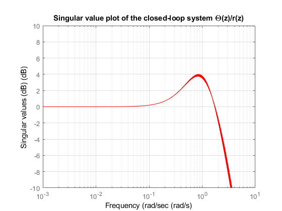 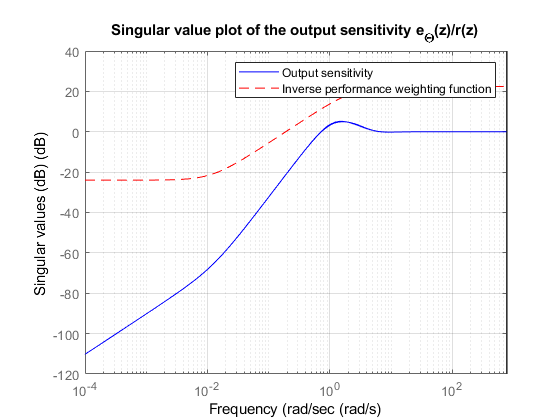 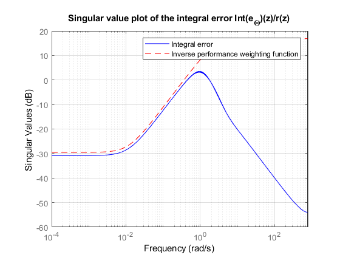 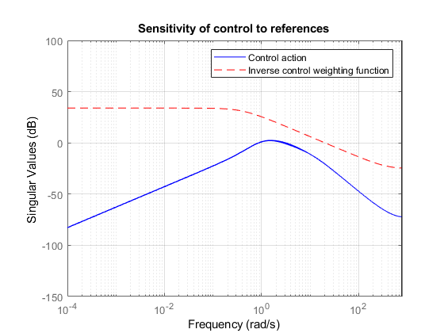 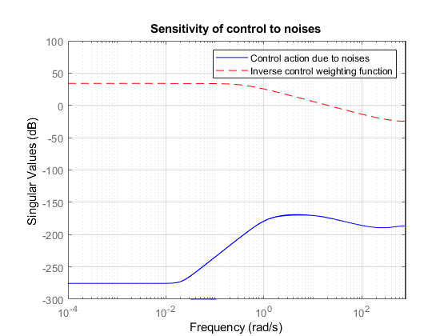 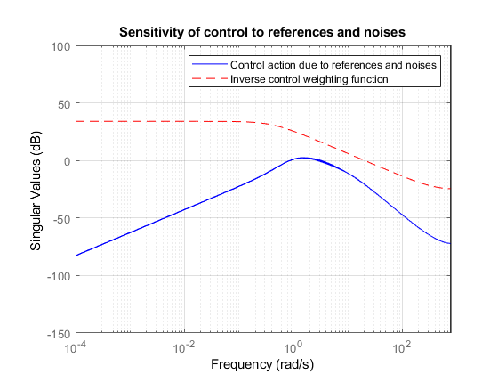 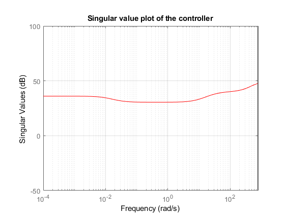 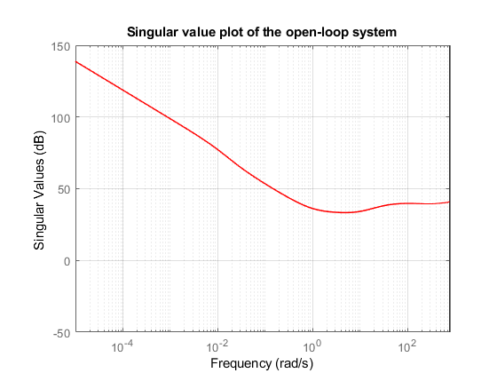
Mu analysis of the Two-Wheeled Robot Control System
closed-loop system
%<<5.PNG>> % % Plant 1 Ts = 4.0*10^(-3); omega = logspace(-3,log10(pi/Ts),200); % omega = logspace(-4,log10(pi/Ts),500); dclp_ic = lft(dsys_ic,Kd,2,9); dclp_g = ufrd(dclp_ic,omega); % Plant 2 dclp_ic2 = lft(dsys_ic2,Kd2,2,4); dclp_g2 = ufrd(dclp_ic2,omega);
robust stability analysis
%Plant 1 figure(1) opt = robopt('Display','on'); [stabmarg,destabu,report,info] = robuststab(dclp_g,opt); report semilogx(info.MussvBnds(1,1),'r-',info.MussvBnds(1,2),'b--') grid title('Robust stability') xlabel('Frequency (rad/sec)') ylabel('mu') legend('\mu-upper bound','\mu-lower bound') %Plant 2 figure(2) opt2 = robopt('Display','on'); [stabmarg2,destabu2,report2,info2] = robuststab(dclp_g2,opt2); report2 semilogx(info2.MussvBnds(1,1),'r-',info2.MussvBnds(1,2),'b--') grid title('Robust stability') xlabel('Frequency (rad/sec)') ylabel('mu') legend('\mu-upper bound','\mu-lower bound')
Points completed: 200/200
ROBUSTSTAB Sensitivity calculations are beginning.
Uncertain element fm...
Uncertain element fw...
report =
7×101 char array
'Assuming nominal UFRD system is stable...↵Uncertain system is robustly stable to modeled uncertainty.'
' -- It can tolerate up to 1.71e+03% of the modeled uncertainty. '
' -- There is a destabilizing perturbation amounting to 4.11e+03% of the modeled uncertainty. '
' -- This perturbation causes an instability at the frequency 25.9 rad/seconds. '
' -- Sensitivity with respect to each uncertain element is: '
' 100% for fm. Increasing fm by 25% decreases the margin by 25%. '
' 100% for fw. Increasing fw by 25% decreases the margin by 25%. '
Points completed: 200/200
ROBUSTSTAB Sensitivity calculations are beginning.
Uncertain element fm...
Uncertain element fw...
report2 =
7×101 char array
'Assuming nominal UFRD system is stable...↵Uncertain system is robustly stable to modeled uncertainty.'
' -- It can tolerate up to 2.19e+04% of the modeled uncertainty. '
' -- There is a destabilizing perturbation amounting to 2.23e+04% of the modeled uncertainty. '
' -- This perturbation causes an instability at the frequency 785 rad/seconds. '
' -- Sensitivity with respect to each uncertain element is: '
' 100% for fm. Increasing fm by 25% decreases the margin by 25%. '
' 19% for fw. Increasing fw by 25% decreases the margin by 4.75%. '
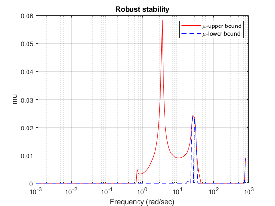 
nominal performance
Plant 1
Ts = 4.0*10^(-3); omega = logspace(-3,log10(pi/Ts),200); figure(1) sv = sigma(dclp_ic.Nominal,omega); sys = frd(sv(1,:),omega); semilogx(sys,'r-') grid xlabel('Frequency (rad/sec)') title('Nominal performance') %Plant 2 Ts = 4.0*10^(-3); omega = logspace(-3,log10(pi/Ts),200); figure(2) sv2 = sigma(dclp_ic2.Nominal,omega); sys2 = frd(sv2(1,:),omega); semilogx(sys2,'r-') grid xlabel('Frequency (rad/sec)') title('Nominal performance')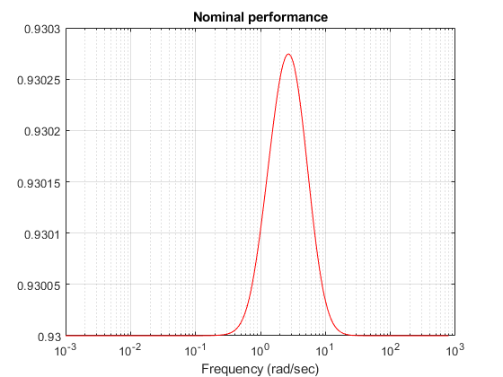 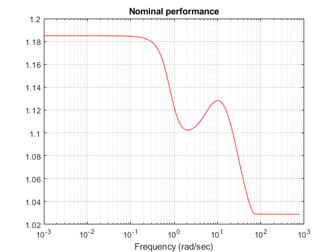
robust performance Plant 1
plant 1
figure(1) opt = robopt('Display','on'); [perfmarg,perfmargunc,report,info] = robustperf(dclp_g,opt); report semilogx(info.MussvBnds(1,1),'r-',info.MussvBnds(1,2),'b--') grid xlabel('Frequency (rad/sec)') ylabel('mu') title('Robust performance') legend('\mu-upper bound','\mu-lower bound') % plant 2 figure(2) opt2 = robopt('Display','on'); [perfmarg2,perfmargunc2,report2,info2] = robustperf(dclp_g2,opt2); report2 semilogx(info2.MussvBnds(1,1),'r-',info2.MussvBnds(1,2),'b--') grid xlabel('Frequency (rad/sec)') ylabel('mu') title('Robust performance') legend('\mu-upper bound','\mu-lower bound')
Points completed: 200/200
ROBUSTSTAB Sensitivity calculations are beginning.
Uncertain element fm...
Uncertain element fw...
report =
6×114 char array
'Assuming nominal UFRD system is stable...↵Uncertain system achieves performance robustness to modeled uncertainty.'
' -- The tradeoff of model uncertainty and system gain is balanced at a level of 107% of the modeled uncertainty. '
' -- A model uncertainty of 107% can lead to input/output gain of 0.93 at 2.73 rad/seconds. '
' -- Sensitivity with respect to each uncertain element is: '
' 0% for fm. Increasing fm by 25% decreases the margin by 0%. '
' 0% for fw. Increasing fw by 25% decreases the margin by 0%. '
Points completed: 200/200
ROBUSTSTAB Sensitivity calculations are beginning.
Uncertain element fm...
Uncertain element fw...
report2 =
6×113 char array
'Uncertain system does not achieve performance robustness to modeled uncertainty. '
' -- The tradeoff of model uncertainty and system gain is balanced at a level of 84.4% of the modeled uncertainty.'
' -- A model uncertainty of 84.4% can lead to input/output gain of 1.18 at 0.001 rad/seconds. '
' -- Sensitivity with respect to each uncertain element is: '
' 0% for fm. Increasing fm by 25% decreases the margin by 0%. '
' 0% for fw. Increasing fw by 25% decreases the margin by 0%. '
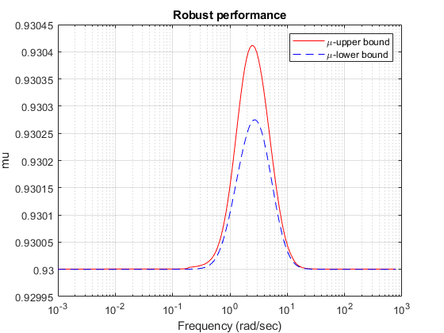 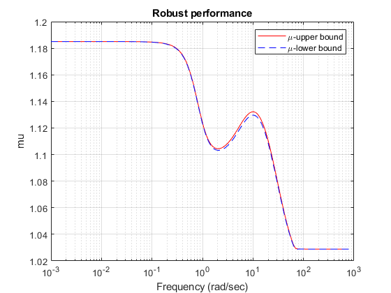 Compare Controller H-inf and -syns
omega = logspace(-2,6,100); sigma(clp_hin,omega) omega = logspace(-3,log10(pi/Ts),200); sigma(dclp2,'r-',omega), grid
omega = logspace(-4,log10(pi/Ts),500); sigma(Kd,'r-',K_hin,'b-',omega), grid axis([10^(-4) pi/Ts -50 100]) title('Singular value plot of the controller') legend('\mu-systhesis','H-Infinity')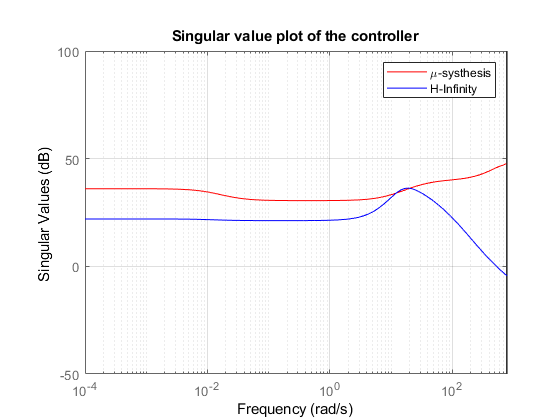
????
ref_loop = clp(1,1); ref_hin =clp_hin(1,1); omega = logspace(-3,log10(pi/Ts),500); figure(1) sigma(ref_loop,'r-',ref_hin,'y-',omega), grid xlabel('Frequency (rad/sec') ylabel('Singular values (dB)') axis([10^(-3) 10^1 -10 10]) title('Singular value plot of the closed-loop system \Theta(z)/r(z)')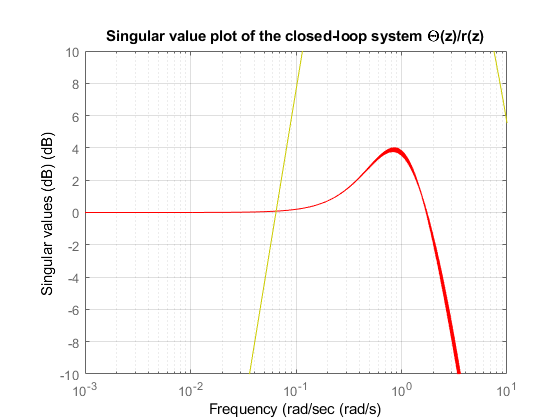
REFERENCE
%[1]D. W. Gu, P. H. Petkov, dan M. M. Konstantinov, “Robust control design with MATLAB®,” in Advanced Textbooks in Control and Signal Processing, 2013. %[2]Yamamoto, Y.: NXTway-GS (Self-Balancing Two-Wheeled Robot) controller design). % http://www.mathworks.com/matlabcentral/fileexchange/19147-nxtway-gs-self-balancingtwo-wheeled-robot-controller-design